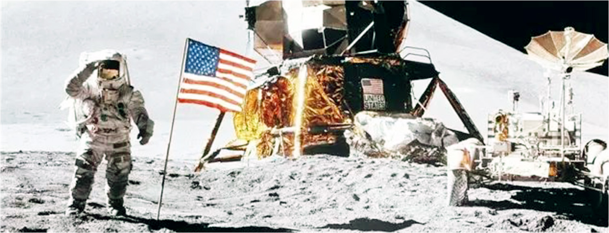
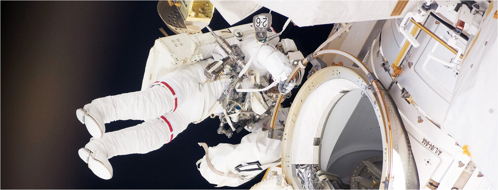

在太空中，由于失去了地球引力，一切物体都处于失重状态。如果不固定位置的话，都可以漂浮在空间。像“炒麦粉”之类的粉末状食物，极易飘得太空仓内到处都是，一不小心，进入宇航员的肺中，很容易造成生命危险。所以早期宇航员吃东西的时候，就要像挤牙膏那样把食物挤进嘴里。从20世纪80年代起，随着航天科技的发展，各国到太空中从事科学研究的宇航员越来越多，而且在太空中工作的时间也越来越长，各国开始更为重视宇航员的饮食问题，航天食品也大为改观，压缩食品、脱水食物、软包装罐头食品等纷纷问世，除此外还设立了专门的简易食堂，不仅使食物更加科学、可口、营养，而且还增添了民族特色。
太空里没有空气，几乎是一个真空环境，温度在一270℃左右，还有许多有害射线、宇宙微流星体等。航天服为何能在这种特殊环境中保护宇航员？航天服是科学家专门为宇航员设计的、能防止各种环境因素危害的密闭装备。航天服由14层不同的铝箔和化学合成纤维压制而成，具有隔热、隔冷、防辐射的作用。宇航员的内衣上盘绕着很长的微型冷却管，能散发掉宇航员身上多余的热量。内衣下部装有尿液贮存器。宇航服上衣连着金属头盔，头盔前面装有护目镜、话筒和耳机。宇航服背部有一背囊，里面装有液氧瓶。另外，宇航服里还装有调节气压、温度、湿度、氧气含量等等的电脑控制装置。
月球有多大，你知道吗？月球的体积只有地球的四十九分之一，如果把月球比作一只网球，那么地球就像一只篮球！月球的表面积只有地球的十四分之一，比4个中国还要小。随着航天事业的发展，宇航员在太空工作的时间越来越长，只有保证睡眠充足，才能使科学实验工作顺利进行。那么，宇航员在太空中怎样睡觉呢？
在太空睡觉不能像在地面那样躺在床上，在太空失重的环境中，宇航员的身体会飘浮起来，所以他们要钻进特制的睡袋里睡觉。更加特别的是太空中没有前后左右之分，所以宇航员睡觉时不仅可以躺着，而且可以站着甚至是倒立着睡，这对他们是没有什么区别的。有的宇航员喜欢用绳子把睡袋一头吊在舱壁上，让睡袋在半空漂浮着，体会飘在空中睡觉的情趣，多数宇航员受地面睡觉习惯的影响，喜欢让睡袋紧贴着舱壁睡觉，这种感觉更接近于睡在床上。宇航服主要有三种。舱内工作服是在登月舱里穿的普通衣服，舱内宇航服，是登月舱里发生危急情况时穿的密封衣服，里面藏着氧气；宇航员如果要到登月舱外面去，那就必须穿上舱外宇航服。
俗话说，“海阔凭鱼跃，天高任鸟飞”，在辽阔无比的太空行走，应该是自由自在、无比舒适的。那么，太空漫步会有危险吗？
太空漫步是指宇航员在太空中离开宇宙飞船或航天飞机，独自在太空中腾空飘游。实际上是充满危险的。太空漫步的主要危险来自于太空的特殊环境，除真空、低压、缺氧、温差等不利因素外，还包括尘埃、流星、太空辐射等因素对人的危害。为了克服这些不利因素，科学家已经为宇航员设计了专门的服装一宇航服，来保护字航员的生命安全。
人类第一个实现太空漫步的是前苏联宇航员昂诺夫，他于1965年3月18日乘“上升2号”宇宙飞船进入太空，并独自跨入太空飘游了十分钟。继之又有美国的宇航员怀特、塞尔南、柯林斯、戈登、奥尔德林等相继做过太空漫步。进行太空漫步实验的主要目的是为航天实验、登月以及维修空间站、人造卫星做准备。
古时候，人们就发现月亮上的景色是不变的，总是以面对着地球，好像故意不让人看到它的背面似的，于是有人认为月球不会自转。但后来人们终于知道，月球不仅进行自转，而且自转一圈的时间和公转一圈的时间完全一样，这是一种复杂而有趣的运动。
nanatsu70
这个人太懒了，连简介都不写。
2018/08/11 12:44阿点
这个人太懒了，连简介都不写。
2018/08/10 20:16